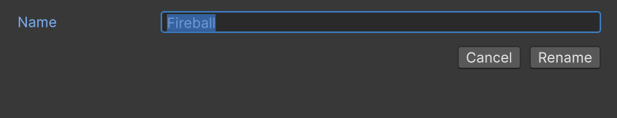

Renaming
You rename an asset from the asset menu's Rename…, with F2 on The Forge's list, or in its inspector's Name.
To rename an asset in The Forge:
- Select the asset in The Forge's list. Press F2, or choose Rename… in the asset menu.
- The Rename window (
ForgeRenameWindow) opens, titled for the asset's type, such as Rename Ability. It holds the asset's name selected, to type over. - Type the new name.
- Select Rename, or press Enter. Cancel, or Escape, leaves the name as it was.

The Rename window.
A rename is one Undo step.
What a rename changes
| Asset | What a rename changes |
|---|---|
| An ability, effect, item, entity or attribute set | It takes the name, and the asset tag the name gives. |
| An attribute | It takes the name. |
| A Scaler asset | The name goes to its scaler, which the lists that offer it show. |
| A Requirement Template | The name goes to its requirements, which the lists that offer them show. |
| An asset with no name of its own, such as a Value Pipeline | It's named by its file, so renaming renames the file, its spaces kept. Undo doesn't take that back. |
The old tag
Where a rename changes an asset tag, every PlayForge asset that stored the old tag stores the new one. That includes a requirement's tag query, a trigger or a filter.
The exception is where another asset still has the old tag as its own, such as the one it was duplicated from.
The file
The asset's file takes the name too, as a new asset's file does. Its spaces, and any character a file can't have, are left out. A number is added where another file in its folder has the name.
Undo and Redo bring the file back with the name.
Renaming in the inspector
In an inspector, leaving the Name field of an ability, effect, item, entity or attribute set renames it this way, its file with it. Each one's tag comes from its own name, so a selection of several can't be renamed at once.
Renaming in code
ForgeRenames renames in code.
| Member | Description |
|---|---|
CanRename(asset) |
True for an asset that's its file's main asset. |
NameOf(asset) |
Its name, as The Forge lists it. |
Rename(asset, name) |
Renames it. |
ForgeRenameWindow.Show(asset) opens the Rename window.
A tag is renamed in The Forge's Tags view (The Tags view).